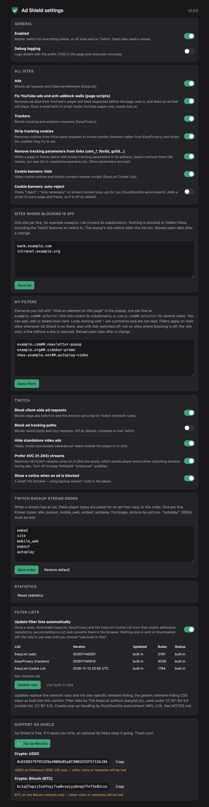

Ad Shield
Ad ShieldNo telemetry. Open source.
Ad Shield sends nothing about you anywhere. The only downloads are the public filter lists, once a week.
- MIT licence, code on GitHub
- No analytics, no remote config
- Free, with no paid tier
Ad ShieldAd Shield sends nothing about you anywhere. The only downloads are the public filter lists, once a week.
